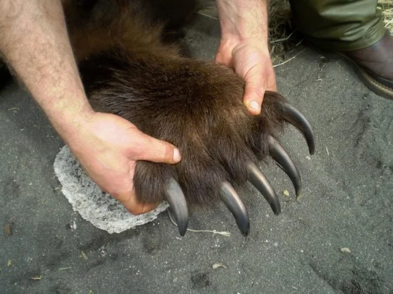
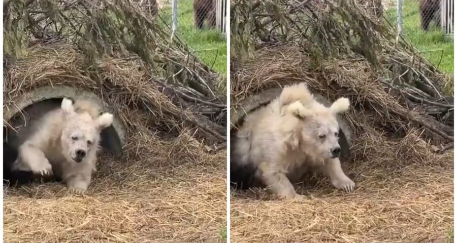
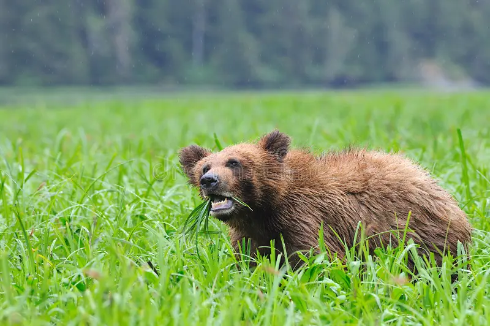
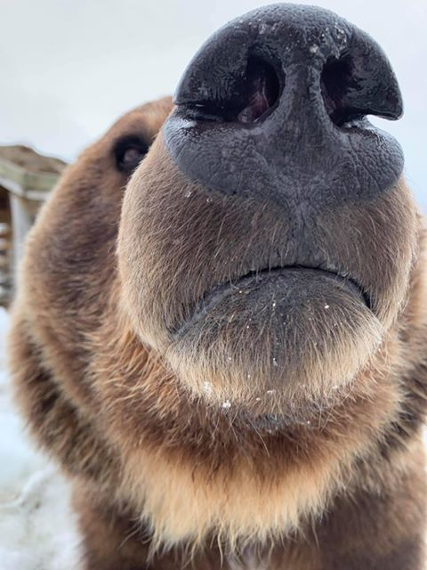
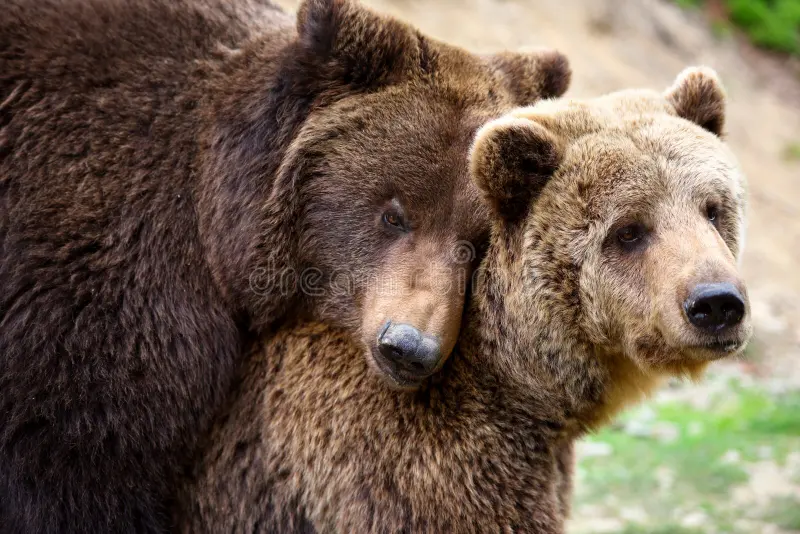
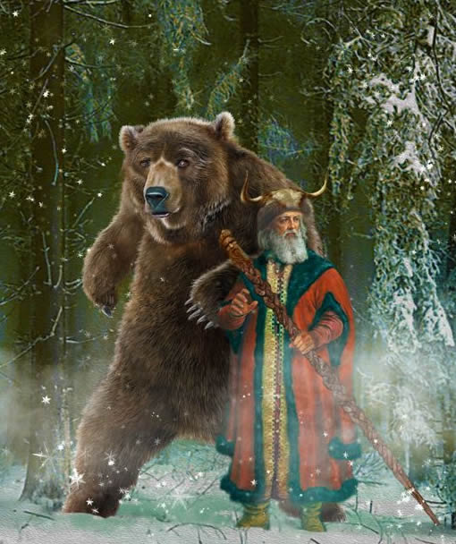
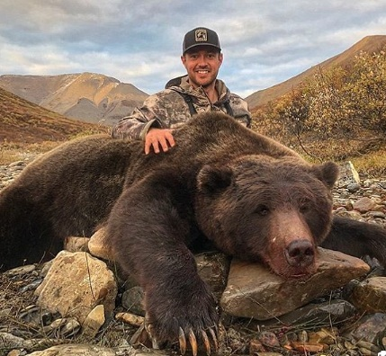

Ursos Pardos

Embora o urso pardo viva em vários lugares do mundo, é na Ásia, especialmente na Rússia, onde se concentra a maior população de ursos-pardos do mundo. Lá o urso é um ícone cultural e político, presente em caricaturas, peças e folclore há séculos.






Na cultura popular, o urso pardo é frequentemente retratado como um símbolo de força e coragem. Ele aparece em contos folclóricos, lendas e até filmes, onde é personificado como protetor e amigável.

Embora o urso pardo não esteja atualmente em perigo de extinção, algumas subespécies, como o urso pardo da Califórnia, estão ameaçadas devido à perda de habitat e caça. A conservação dessas populações é crucial para garantir a sobrevivência da espécie.
Eu sei que essa especie ainda não esta em alerta, mas não devemos esperar os sinais vermelhos para nos preocupar.

O urso-pardo desempenha um papel crucial na fauna e no meio ambiente, principalmente como predador de topo e dispersor de sementes.
Dispersão de sementes: Através de sua dieta variada, que inclui frutas e bagas, os ursos-pardos ingerem sementes que são subsequentemente depositadas em diferentes locais através de suas fezes. Esse processo é vital para a regeneração florestal e a manutenção da diversidade vegetal